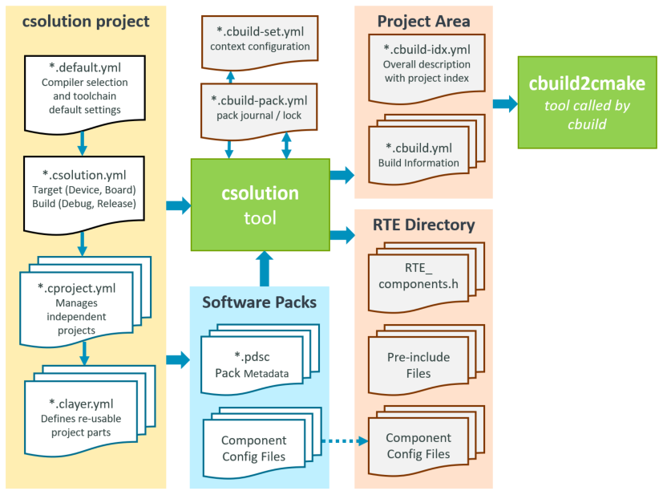
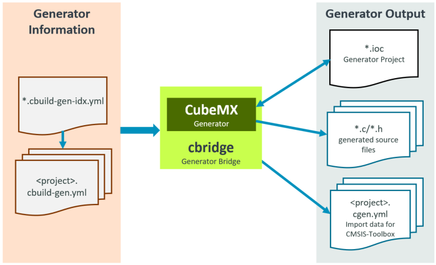

Build Operation
This chapter explains the overall build process of the CMSIS-Toolbox and how to add a new compiler toolchain.
Build Process Overview
This section contains details of the build process. For a high-level description, refer to Overall Workflow.
Note
- The tool options
--verboseand--debugenable detailed output about the build process for analysis. - Refer to the chapter Build Tools for more information on the command line syntax.
cbuild Build Invocation
The cbuild utility controls the overall build process. It has two operating modes:
- build mode generates the application and is the default command (no explicit command required).
- setup mode generates the setup information for an IDE to populate dialogues, IntelliSense, and project outline views.
Details of the build mode
Without a specific cbuild command, the application is built. The typical invocation is:
cbuild <name>.csolution.yml [--packs] [--context-set] [--update-rte] [--frozen-packs]
It generates the application program that is described with the <name>.csolution.yml project.
- When option
--packsis used, it downloads missing software packs usingcpackget. - It calls
csolutionto process the the<name>.csolution.ymlproject.- With option
--update-rtenew configuration files from software packs are updated and theRTE_Components.hfile is recreated. - With option
--context-setthe file*.cbuild-set.ymlspecifies the context configuration of the application. - With option
--frozen-packsthe file*.cbuild-pack.ymlis used as input to issue an error when a pack version changes.
- With option
- The output are build information files with all relevant project information for the build process.
- The option
--toolchaincan be used to explicitly select a compiler.
Note
By default, the cbuild invocation does not update or change configuration files in the RTE Directory. Use the option --update-rte if this is required.
Details of the setup mode
The cbuild setup command prepares the data for an IDE environment. This command is called at the start of an IDE or whenever a csolution project file is modified. The typical invocation is:
cbuild setup <name>.csolution.yml [--packs] [--context-set] [--update-rte] [--frozen-packs]
Typical IDE environments use a --context-set that specifies the context configuration of the application. For an application described by a <name>.csolution.yml file, these steps are executed:
- Check YML file syntax against schema for all files specified by
<name>.csolution.yml. - Check the correctness of all files specified by
<name>.csolution.yml. - Evaluate the potential software layers for Reference Applications using
variables:to refer to layers (if the value is undefined). All projects are considered in this step. - Evaluate the selectable compiler toolchains when the csolution project does not contain a
compiler:selection or the--toolchainoption is not applied. The available toolchains are based on the compiler registration and theselect-compiler:node in the file<name>.csolution.ymlorcdefault.yml. - Create the file
compile_commands.jsonin the output directory for the context defined in*.cbuild-set.yml.
Note
The file compile_commands.json is generated by CMake with the option --target <context>-database and contains all source files of the context along with compiler options. It is used by the IntelliSense system of an IDE.
The operation is further controlled by options:
- The option
--packsdownloads missing software packs. - The option
--context-setrestricts the operation to thecontext-setselected by the file<name>.cbuild-set.yml. If this file is missing a file<name>.cbuild-set.ymlwith a selection of the firsttarget-type, the firstbuild-type, and the firstprojectthat is specified in the file<name>.csolution.ymlis created. - The option
--update-rteupdates the configuration files of the application. - With the option
--frozen-packsthe file*.cbuild-pack.ymlis used as input. An error is issued when a pack version changes. - The option
--toolchaincan be used to explicitly select a compiler.
csolution Project Manager
csolution processes the csolution project files (in YAML format) and the *.pdsc metadata files of software packs and performs the following operations:
- In the Project Area:
- Generate build information files
*.cbuild-idx.ymland*.cbuild.ymlwith all relevant project information for the build process.
- Generate build information files
- In the RTE Directory:
- Generate for each context the RTE_components.h file and pre-include files from the software pack (
*.pdsc) metadata. - Copy the configuration files from selected software componentsand provide PLM information.
- Generate for each context the RTE_components.h file and pre-include files from the software pack (
- In the base directory of the solution:
- Generate the file
*.cbuild-pack.ymlthat records all used software packs. With the option--frozen-packs, this file is used as input. - With the option
--context-setthe file*.cbuild-set.ymlspecifies the context configuration of the application. When--contextnames are specified this file is updated with this selection.
- Generate the file
The picture below outlines the operation.

cbuild2cmake Generate CMakeLists Files
cbuild2cmake reads the build information files *.cbuild-idx.yml and *.cbuild.yml to get all relevant project information for the build process. It generates the following output files for CMake build system:
| Output Directory/File | Description |
|---|---|
./<tmp-dir>/CMakeList.txt |
Describes the overall application build process with the current context configuration. |
./<tmp-dir>/<context> |
Each context has a separate sub-directory with the following files: |
./<tmp-dir>/<context>/CMakeList.txt |
Describes the build process for this context. |
./<tmp-dir>/<context>/toolchain.cmake |
Describes the toolchain used for this context. |
./<tmp-dir>/<context>/groups.cmake |
Contains all definitions and source files that are related to file groups. |
./<tmp-dir>/<context>/components.cmake |
Contains all definitions and source files that are related to components. |
CMake Invocation
The CMake build system is invoked with the following commands:
- CMake configuration command defines the build generator, source, and build directory with:
cmake -G Ninja -S <tmpdir> -B <tmpdir> -Wnodev
- CMake build command to build the application program for each context with:
cmake --build <tmpdir> -j <n> --target <context>
- CMake build command to generate the IntelliSense
compile_commands.json(used by the commandcbuild setup) for each context with:
cmake --build <tmpdir> -j <n> --target <context>-database
Adding a Toolchain to CMSIS-Toolbox
The following section explains how to add a compiler toolchain to the CMSIS-Toolbox.
Steps
The section below describes the steps to add a new compiler toolchain to the CMSIS-Toolbox.
- Define a
compiler_namefor the new compiler toolchain, i.e.CLang. - Add this
compiler_nameto the"CompilerType":in the schema file./tools/projmgr/schemas/common.schema.json. - Create a new CMake file in
./tools/buildmgr/cbuildgen/configwith the naming conventioncompiler_name.<version>.cmake. - Map with the file
compiler_name.<version>.cmake. the CMake input variables to the CMake toolchain variables. - Use an existing
*.cmakefile, i.e.GCC.<version>.cmakeas a reference.
CMake Variables
The CMakeLists.txt file sets the following CMake input variables that should be processed by compiler_name.<version>.cmake.
| CMake Variable | Possible Values | Description |
|---|---|---|
BYTE_ORDER |
Little-endian, Big-endian | Endian processor configuration |
CPU |
DCoreEnum | Processor core selection |
FPU |
DfpuEnum | Floating point unit support |
DSP |
DdspEnum | DSP instruction set support |
TZ |
DtzEnum | TrustZone support |
SECURE |
DsecureEnum | Software model selection |
MVE |
DmveEnum | MVE instruction set support |
BRANCHPROT |
BRANCHPROT values |
[Branch protection |
OPTIMIZE |
Optimize values | Generic optimize levels for code generation |
WARNINGS |
Warnings values | Control warning level for compiler diagnostic |
DEBUG |
Debug values | Control the generation of debug information |
DEFINES |
Define symbols | List of symbol #define statements |
BRANCHPROT Values
The following table lists the possible values for the CMake variable BRANCHPROT.
| Values | Description |
|---|---|
| NO_BRANCHPROT | Branch protection not used |
| BTI | Using BTI (Branch Target ID) |
| BTI_SIGNRET | Using BTI + Sign Return |
The compiler_name.<version>.cmake sets the following CMake variables to specify the toolchain and select toolchain options.
| CMake Variable | Description |
|---|---|
ASM_CPU, CC_CPU, CXX_CPU |
Device selection set according to the combination of device attributes (CPU, FPU, DSP, MVE, etc.) |
AS_LEG_CPU, AS_ARM_CPU, AS_GNU_CPU |
Similar to the previous item but for assembly dialect variants (if applicable) |
ASM_FLAGS, CC_FLAGS, CXX_FLAGS, LD_FLAGS |
Flags applicable to all modules of the given language |
CC_SECURE, LD_SECURE |
Flags applicable only for secure projects |
_PI |
Pre-include option |
_ISYS |
system include option |
LIB_PREFIX |
Generated library name prefix |
LIB_SUFFIX |
Generated library name suffix |
EXE_SUFFIX |
Generated executable name suffix |
ELF2HEX |
Flags for ELF to HEX conversion |
ELF2BIN |
Flags for ELF to BIN conversion |
CMAKE_C_COMPILER_ID |
CMake compiler identifier |
CMAKE_C_COMPILER_VERSION |
CMake compiler version |
CMake Integration
The executes: node in the csolution project files allows the integration of other CMake projects or scripts.
Example
The following CMakeLists.txt file integrates the FCARM file converter that is part of the MDK-Middleware. The FCARM file converter reformats all web files into a single C-file which is then included and compiled into the project.
# CMakeLists.txt for calling FCARM
# Find input files in the input base directory and in its subfolders using recursive scanning
# Format arguments and generate a steering command file, overcoming any command line length limitation
# Call FCARM using the steering command file, generating the source file in the expected output
#
# Configuration Step: ${CMAKE_COMMAND} -G <generator> -S <source directory> -B <build directory> -DINPUT_DIRECTORY=<input base directory> -DOUTPUT=<output source file>
# Build Step: ${CMAKE_COMMAND} --build <build directory>
#
# <generator>: underlying generator build system, e.g. Ninja
# <source directory>: directory where this CMakeLists.txt resides
# <build directory>: directory for temp files
# <input base directory>: directory where input data is located
# <output source file>: path and filename of source file to be generated
cmake_minimum_required(VERSION 3.22)
include(ExternalProject)
project("FCARM" NONE)
file(GLOB_RECURSE INPUT ${INPUT_DIRECTORY}/*)
foreach(ITEM ${INPUT})
cmake_path(RELATIVE_PATH ITEM BASE_DIRECTORY ${INPUT_DIRECTORY} OUTPUT_VARIABLE FILE)
list(APPEND FILES ${FILE})
endforeach()
string(REPLACE ";" ",\n" FILES "${FILES}")
cmake_path(RELATIVE_PATH OUTPUT BASE_DIRECTORY ${INPUT_DIRECTORY} OUTPUT_VARIABLE RELATIVE_OUTPUT)
cmake_path(GET INPUT_DIRECTORY FILENAME INPUT_DIRECTORY_NAME)
cmake_path(GET INPUT_DIRECTORY PARENT_PATH WORKING_DIRECTORY)
set(COMMAND_FILE "${CMAKE_CURRENT_BINARY_DIR}/Auto_FcArm_Cmd.inp")
file(WRITE ${COMMAND_FILE} "${FILES}\nTO ${RELATIVE_OUTPUT} RTE NOPRINT ROOT(${INPUT_DIRECTORY_NAME})\n")
add_custom_target(FCARM ALL DEPENDS ${OUTPUT})
add_custom_command(OUTPUT ${OUTPUT} DEPENDS ${INPUT}
COMMAND fcarm @${COMMAND_FILE}
WORKING_DIRECTORY ${WORKING_DIRECTORY}
)
Integration in a csolution project. In this case, it is part of the *.csolution.yml, but it may also be part of the *.cproject.yml file that uses the source file Web.c as input. The CMake build system checks for project dependencies and schedules the overall build process.
solution:
:
executes:
- execute: Run-FCARM
run: ${CMAKE_COMMAND} -G Ninja -S ${INPUT_0} -B ${CMAKE_CURRENT_BINARY_DIR}/fcarm-cmake -DINPUT_DIRECTORY=${INPUT_1} -DOUTPUT=${OUTPUT} && ${CMAKE_COMMAND} --build ${CMAKE_CURRENT_BINARY_DIR}/fcarm-cmake -- --quiet
always:
input:
- fcarm-cmake # CMake script directory
- Web # Input directory with "web files" for FCARM
output:
- project/Web.c # Output file for FCARM
Generator Integration
The diagram below shows how a generator is integrated into the CMSIS build process. The data flow is exemplified on STM32CubeMX (Generator ID for this example is CubeMX). The information about the project is delivered to the generator using the Generator Information files (<solution-name>.cbuild-gen-idx.yml and <context>.cbuild-gen.yml). This information provides CubeMX with the project context, such as the selected board or device, and CPU mode, such as TrustZone, disabled/enabled.

The utility cbridge gets as parameter the <solution-name>.cbuild-gen-idx.yml and calls the generator. For the CubeMX generator example, these files are created:
*.iocCubeMX project file with current project settings*.c/.hsource files, i.e. for interfacing with drivers<project-name>.cgen.yml(created bycbridge) provides the data for project import into the csolution build process.
Note
CubeMX itself does not have the required interfaces to the csolution project format. The utility cbridge converts the build information files into command-line options for CubeMX. cbridge also generates the <project-name>.cgen.yml based on the information generated by CubeMX.
Generator Start via component
A <component> element with a generator attribute in a *.PDSC file is used to start the generator. Typically this component is provided in a Device Family Pack (DFP) or a Board Support Pack (BSP).
Example component for CubeMX in DFP:
<component generator="CubeMX" Cclass="Device" Cgroup="CubeMX" Cversion="0.9.0">
<description>Configure device or board with STM32CubeMX</description>
</component>
Note
No <generator> element in the *.PDSC file is required when the Global Generator Registry File is used. The generator="id" attribute of the <component> element in the *.PDSC file is the reference to the - id: list node in the global.generator.yml file.
Global Generator Registry File
For generators with no <generator> element in the *.PDSC file, the global.generator.yml in the CMSIS-Toolbox ./etc directory contains is used. The generator: node in this YAML file registers the supported generators with the following keys:
generator: |
Content | |
|---|---|---|
- id: |
Required | <generator-id> referred in the *.PDSC file |
download-url: |
Optional | URL for downloading the generator |
run: |
Required | Name and location of the utility that starts the generator |
path: |
Required | Output directory of the generator. Contains the file *.cgen.yml. |
generator:
- id: CubeMX
download-url: https://www.st.com/en/development-tools/stm32cubemx.html#st-get-software
run: ../bin/cbridge
path: $SolutionDir()$/STM32CubeMX/$TargetType$
Note
The only argument to the run: command is the path to the Generator Information Index File. There are no configurable parameters for this utility. The invocation is:
cbrige <csolution-name>.cbuild-gen-idx.yml